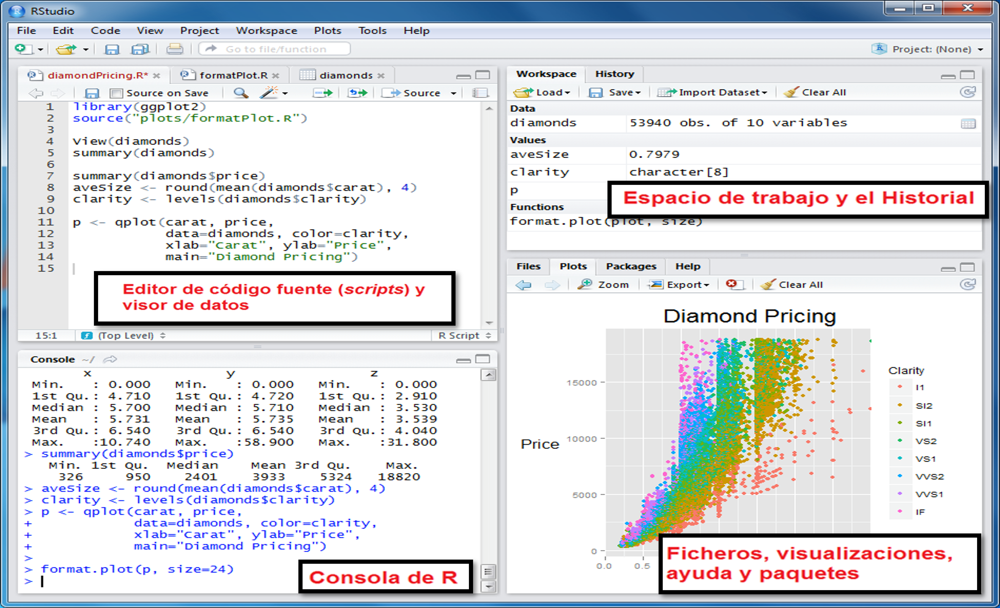
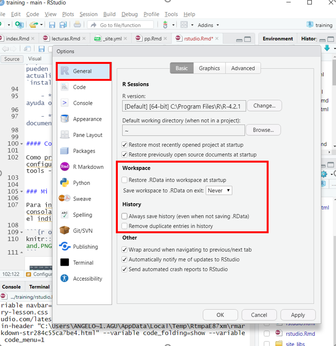
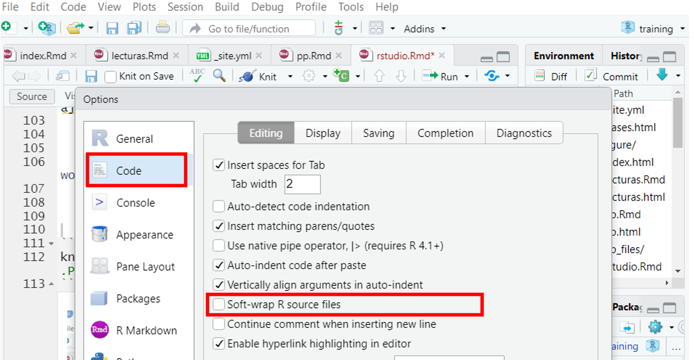
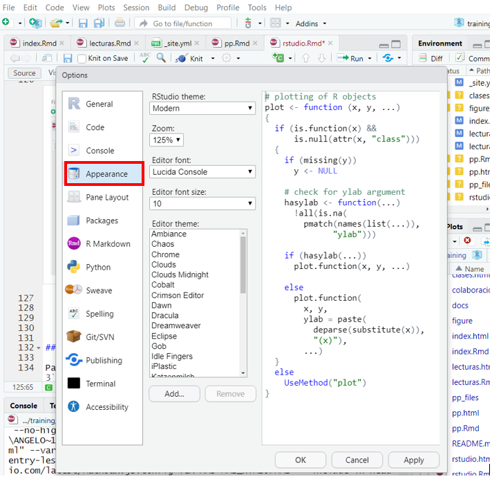
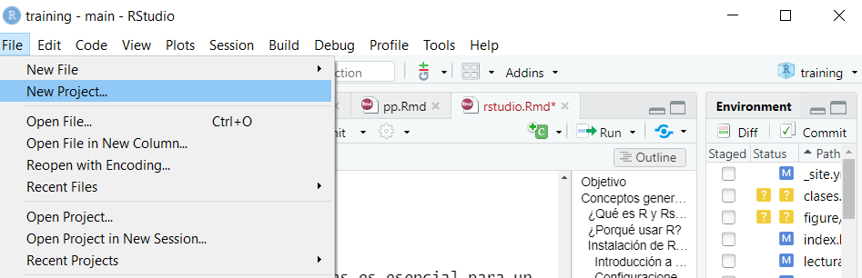
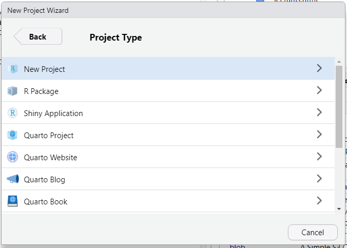
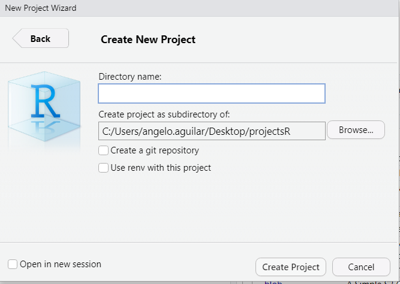
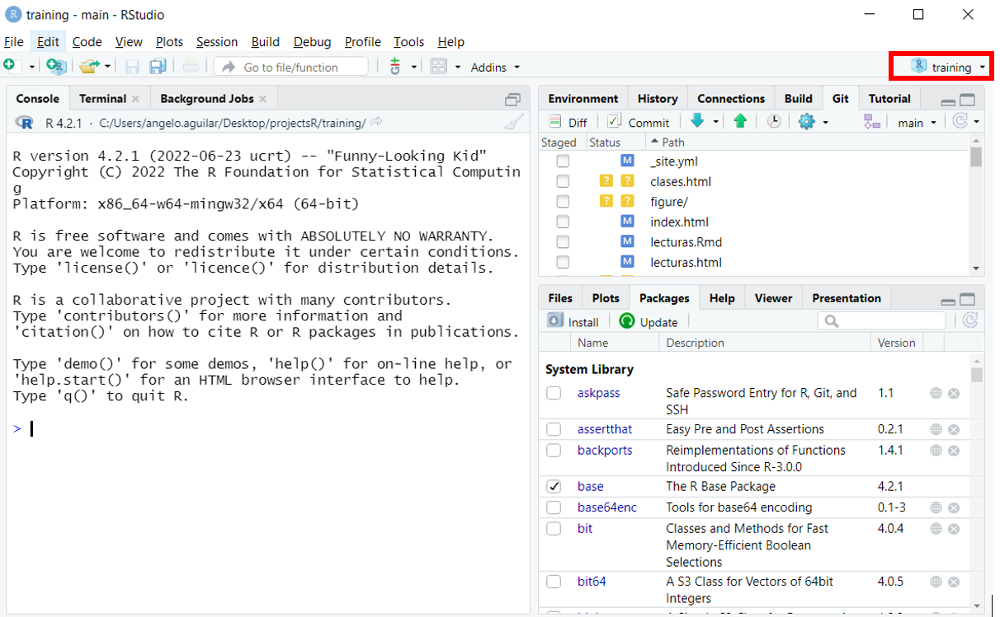

Instalación de R y RStudio
Para la instalación del software se debe ingresar al sitio web de R-project y
descargar el archivo adecuado según tu sistema operativo de elección
(Linux, Mac OS, Windows). Se recomienda descagar el archivo
apk más reciente. Sigue las instrucciones para completar el
proceso de instalación.
Despues de instalar R, se recomienda instalar un editor de texto. El editor de texto por excelencia es R-studio razón por la cual en el presente curso se usará esta interfaz de trabajo.
R-studio es lo que se conoce como un entorno de desarrollo integrado (IDE) para el lenguaje de programación R. Proporciona una única interfaz para que un usuario de R pueda gestionar todos los aspectos de un análisis (escribir código, gestionar y trazar datos. ver resultados, obtener ayuda, etc.). Esta interfaz esta conformado por cuatro paneles:

Editor de código. Aquí es donde se escribe el código de los análisis. Cada pestaña representa un un script diferente.
La consola. Aquí es donde R muestra los resultados de tu código cuando este se ejecuta. Se puede escribir código directamente en la cónsola despues del símbolo
>.Espacio de trabajo e historial de archivos. Este panel generalmente tiene dos pestañas:
Environment, muestra todos los datos, variables y funciones definidas por el usuario.
History, muestra una lista de todos los comandos ejecutados previamente.
Ficheros, visualizaciones, ayuda y paquetes. Este panel contiene cinco pestañas útiles:
Files, permite visualizar y explorar todos los archivos contenidos en el directorio de trabajo.
Plots, cuando realice gráficos con su código, se mostrarán aquí.
Package, muestra una lista de paqueterías instaladas en el computador. Se pueden instalar nuevas paqueterías o actualizar las existentes dando click a
installoupdate.Help para acceder a varias páginas de ayuda o consulta.
Viewer, usada para visualizar documentos en formato HTML elaborados en R.
Configuraciones (opcional)
Como recomendación personal sugiero configurar algunos aspectos del programa que te ayudaran a tener una experiencia mucho más agradable. Realizar lo siguiente:
abrir R-studio -> tools -> global options -> general,
Asegúrese de que la opción Restore .RData into workspace at startup se encuentre deshabilitada.
Asegúrese de que la opción Save workspace to .RData on exit este configurado como Never.
Asegúrese de que la opción Always save history (even when not saving .RData) se encuentre deshabilitada.
Estos ajustes evitarán que se generen diferentes cuadros de diálogos y archivos inútiles cada vez que abra y cierre el programa.

R-studio -> tools -> global options -> code,
- Asegúrese de tener deshabilitado la opción Soft-wrap R source files. Esto le permitirá que las líneas de código se ajusten al tamaño de la ventana del editor de código.

R-studio -> tools -> global options -> Appearence,
- Aquí podrá ajustar el tamaño, letra, fondo de la consola de acuerdo a sus preferencias.

Directorio de trabajo
Mantener las cosas organizadas es esencial para un uso eficiente de R. Es importante asegurarse de que todos los archivos se encuentren en un mismo directorio. Para este fin, se recomienda crear un proyecto en R. Básicamente, un proyecto de R es un entorno creado para almacenar todos los archivos (script, imágenes, reportes, datos) que serán creados durante la codificación. Algunas de las ventajas de crear un proyecto son:
Los archivos se leen y se escriben dentro del proyecto.
Todos lo necesario para los análisis se encuentran organizados en un solo lugar.
No tienes que escribir continuamente la ruta de los archivos de trabajo. Estos serán reconocidos inmediatamente.
Mayor reproducibilidad.
Para crear un proyecto en R debemos de ir a
file -> New Project



